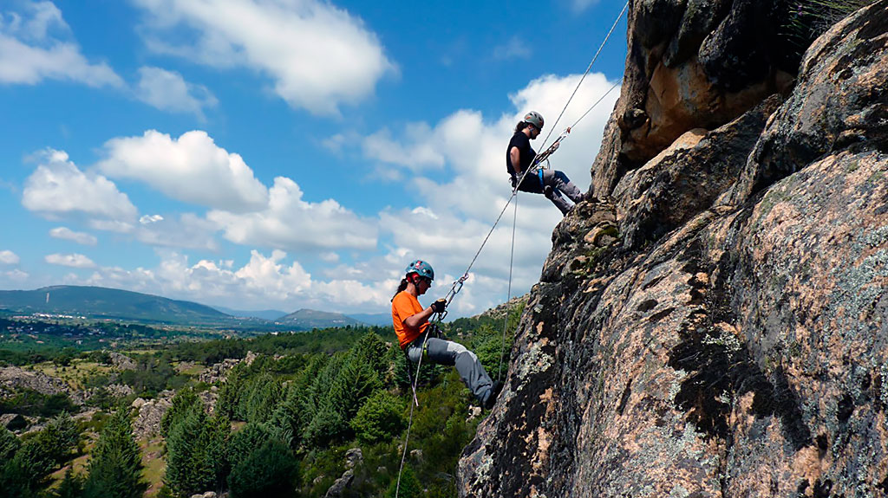

El rápel es un sistema de descenso por superficies verticales utilizando técnicas de cuerdas.1 Se utiliza en lugares donde el descenso de otra forma es complicado, o inseguro. El rápel es el sistema de descenso o ascenso autónomo ampliamente utilizado, ya que para realizar un descenso solo se requiere, además de conocer la técnica adecuada, llevar consigo una cuerda, y en la mayoría de las técnicas un arnés y un descensor. El rápel es utilizado en excursionismo, montañismo, escalada en roca, espeleología, barranquismo y otras actividades que requieren ejecutar descensos verticales.
El rápel también es utilizado en rescate, tanto en los medios naturales como en los urbanos, así como en operaciones militares.
HISTORIA
Las actuales técnicas del rápel, aunque resulte extraño en una actividad sus orígenes en cuestión muchos los remontan a finales del XVIII apenas han comenzado a desarrollarse en la década de los 80. Eso no quiere decir, que en tiempos anteriores, alpinistas individuales no hayan diseñado y utilizado rapeladores similares a los actualmente generalizados. Se sabe por ejemplo, que ya a principios de los años 30 el espeleólogo Henry Brenot utilizaba un rudimentario ascensor para sus exploraciones de grandes cimas, y que a mediados de los sesenta, otro espeleólogo, Dressler, fabricaba a pequeña escala unos descensores a poleas, muy similares a los que hoy en día aún se fabrican con su marca. Pero, como suele ser frecuente en estos casos transcurrió cierto tiempo entre el "invento" y su popularización. Por poner un ejemplo, hasta bien entrados los setenta los manuales de alpinismo, escalada y espeleología recomendaban aún sistemas como el Comici, el Piaz o el Dülfer, y la primera referencia a un rapelador se alude a un rudimentario descensor que el autor llama "gancho de descenso", pero no recomienda su utilización porque "estropea la cuerda y presupone el uso de un utensilio exclusivo para el rápel". Pero en cambio, en estos pocos años transcurridos han aparecido innumerables artilugios para rapelar, e incluso muchos de ellos específicos para alguna faceta determinada de la actividad, como los autoblocantes de espeleología o los "a barra" para grandes verticales.
Sistemas de rápel
Sólo se utilizan en casos de emergencia, debido a la menor seguridad que ofrecen.
Rápel de brazo, es práctico en paredes de poca verticalidad colocando la cuerda sobre el hombro para pasarla alrededor de los brazos extendidos controlando la velocidad con el agarre de la mano y por la fricción entre los hombros y los brazos. Se realiza en paredes con poca inclinación y corta distancia debido a que es difícil controlar todo el peso del cuerpo con la simple fricción con tu brazo, además de las heridas que se pueden provocar por las quemaduras del roce.
Rápel Dulfer o "a la alemana". Se considera el más simple para todos los usos ya que no necesita equipo especial. El montañista se coloca frente al anclaje, se pone la cuerda entre las dos piernas, la pasa alrededor de la cadera de modo que cruce el pecho hasta el hombro contrario, pasa la cuerda por el hombro y la deja caer por la espalda, aguantándola con la mano del mismo lado que la cadera rozada por la cuerda. La otra mano detiene la cuerda por arriba del montañista para mantener la posición vertical. El riesgo de este sistema es el roce de la cuerda con el cuerpo por lo que se debe proteger la piel ya que la fricción puede provocar quemaduras. Además de que se puede soltar fácilmente y producirse una caída libre. Es sólo apto para expertos y atrevidos.
Rápel Comichi, se asemeja al dulfer con la diferencia de que la cuerda no pasa directamente por el muslo, si no por un mosquetón del arnés y la cuerda pasa por la espalda.
FRICCIÓN EN MOSQUETONES
-Rápel con mosquetones, además llamado sistema Gramminger o de bomberos. Para este rápel se utilizan mosquetones de forma ovalada o en forma de "D", uno con seguro, o dos sin seguro con los gatillos enfrentados, y tres más sin seguro (o cuatro si la cuerda es de diámetro menor a diez milímetros).
-Freno con mosquetón, utilizando un mosquetón con seguro se le da dos o tres vueltas a la cuerda en barrilete en el extremo paralelo al seguro, y asegurando el arnés mediante otro mosquetón.
-Rápel con nudo dinámico, en caso de necesidad podemos usar un mosquetón de seguridad con forma asimétrica (de pera) y un nudo dinámico. Este sistema hace correr mucho la cuerda, por lo que hay que extremar la precaución.
CON DESCENSOR
Éstos son los sistemas más utilizados por su seguridad.
-Rápel con ocho, recibe este nombre debido a la forma del mismo descensor, aunque el aparato es un clásico del mundo de la escalada, actualmente su uso se ha reducido ante la aparición de otros descensores más eficientes y seguros.
-Rápel con descendedor de poleas, usado especialmente en la práctica de la espeleología o espeleísmo. El aparato consiste en 2 poleas donde la cuerda forma una "S" generando suficiente fricción para controlar nuestro descenso. Hay dos modelos básicamente; sin seguro y con seguro autoblocante, (Stop de Petzl)
-Rápel con dispositivos tubulares, entre los más populares esta el ATC, el reverso y otros cuyos nombres dependen del fabricante, tienen un factor de fricción mayor que el ocho, por lo que se necesita menor esfuerzo para controlar nuestro descenso. Otra ventaja frente al ocho es que no riza la cuerda.
-Rápel con Rack, además llamado popularmente marimba, está formado por barras, y fueron diseñados para descender grandes verticales, rizan muy poco la cuerda y funcionan incluso con cuerdas embarradas.
-Rápel a la australiana, se realiza mirando hacia abajo, en vez de la posición habitual de espaldas. Creado por el ejército australiano.
EQUIPO
Para la práctica del rápel se requiere de un conjunto de artefactos. El equipo varia según el sistema de rápel que se utilice. Para los sistemas como el Dulfer bastará una cuerda o incluso algo similar a ello (para casos de emergencia), pero para los sistemas con descensor, que son más comunes y seguros, se requiere de equipo más completo.
El equipo colectivo es el que se utiliza para la instalación y puede ser usado por muchas personas. Consiste básicamente de:
-Cuerda
-Cinta plana o cuerda para anclaje, en los casos en que la cuerda de ráppel pudiera sufrir sin estos elementos auxiliares.
-Almohadillas o protectores para la cuerda, para protegerla de aristas con bordes filosos.
-mosquetones con seguro o dos sin seguro.
El equipo personal es el equipo que usa cada persona. Cómo mínimo se compone de:
-Arnés de cintura (tipo escalada) o integral (tipo trabajos verticales).
-Mosquetón con seguro (habitualmente de cierre automático con rosca de seguridad o cierre de bayoneta).
-Cabo de seguridad o pata de anclaje (para preparar el ráppel en lugares expuestos).
-Descensor.
-Casco, en caso de riesgo de caída de piedras, de poder golpearse con la pared o para mayor seguridad.
-Guantes.